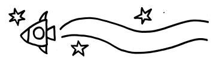

Dates, Times and Places
SPACECAPTION1999: DATES, TIMES AND PLACES
spacecaption1999 will take place on the 21st-22nd August 1999, in the Oxford Union, St Michael's Street, Oxford, OX1, which is just off the main shopping street, five-ten minute's walk from the train station and three minute's walk from the bus station. The site will open at 10am on Saturday for coffee, and the bar will be fully open from 11am to 11pm, when the site will close for the night. The site will reopen 11am Sunday morning with a full bar through to 5.30pm Sunday afternoon. The site will close at 6pm on Sunday.

SPACECAPTION1999: PRICES AND DEALS
Buy your advance memberships using the form on the back of the flier. Standard advance membership is £7.50 waged, £5.00 unwaged. Membership on the door costs £10, no reductions. Supporters can buy a Friend of Caption membership at a cost of £15, to help provide the money required to get Caption 2000 started next year. If you can't make Saturday, the 'wage-slavers' Sunday-only membership will set you back £3.00, no reductions. We can't guarantee main guests or programme books for Sunday, but it's a lot of fun otherwise. Caption t-shirts, and our anthology, Superstate Funnies, will be on sale on the Caption table. Numbers of t-shirts are limited, so if you really want one, buy one in advance, using the form on the back.
SPACECAPTION1999: FURTHER INFORMATION
Further information is provided to all advance members, including a map showing the location of the union, a list of local B&Bs, hostels, etc. and a 'so far' membership list. More information about the site, eateries and more will be in the Caption Programme book, free to all members. spacecaption1999 reserves the right to replace advertised guests and events with items of similar or higher quality. Any further questions, get in touch.